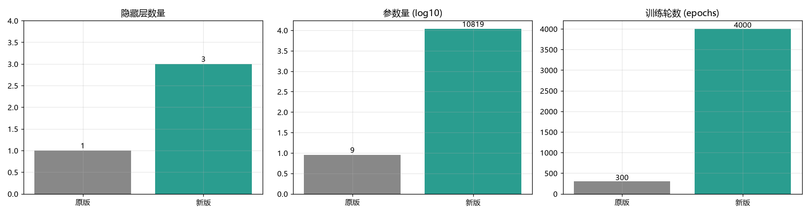
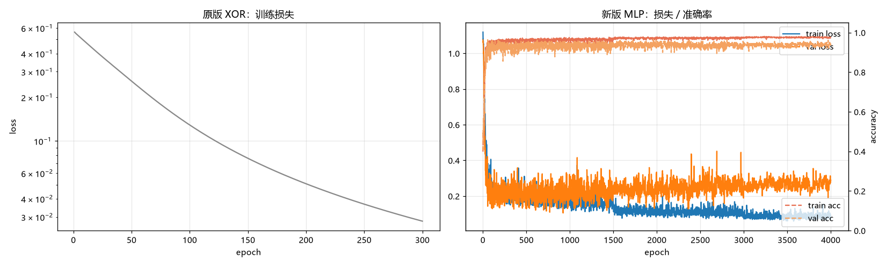
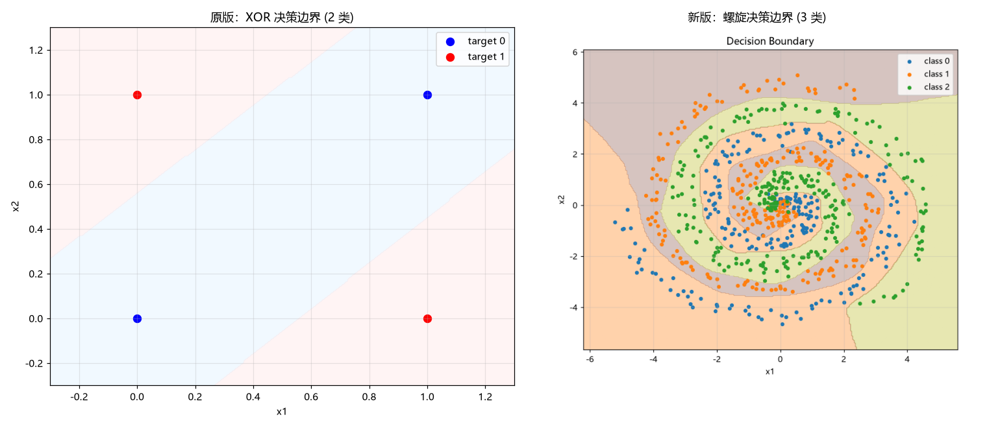
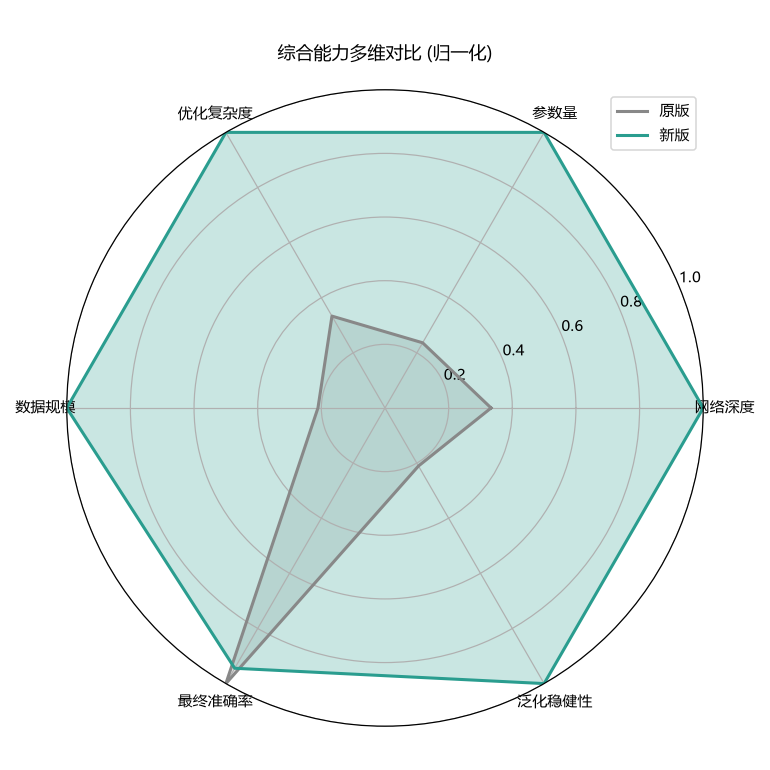
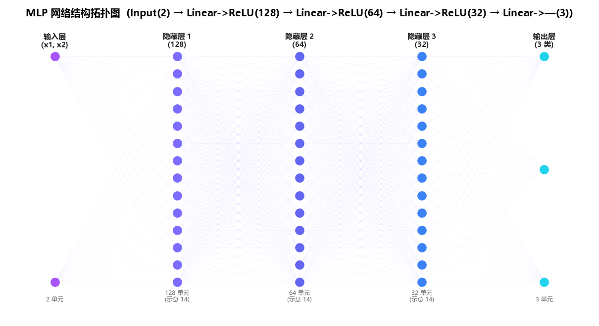
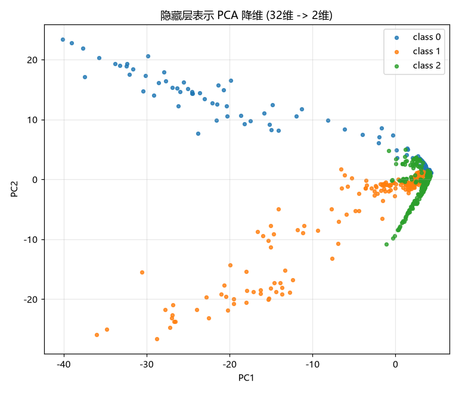
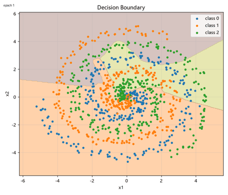
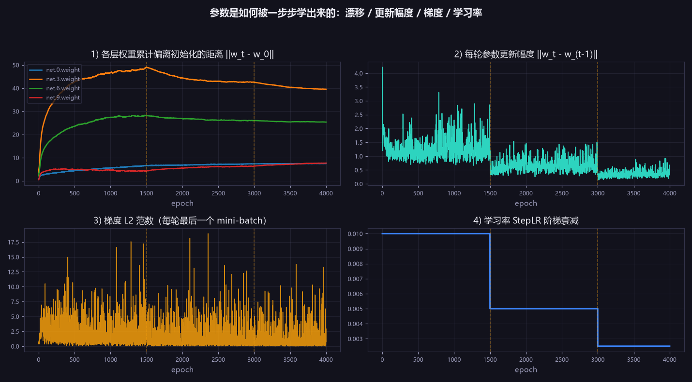
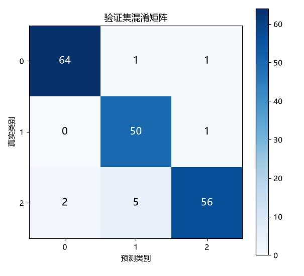
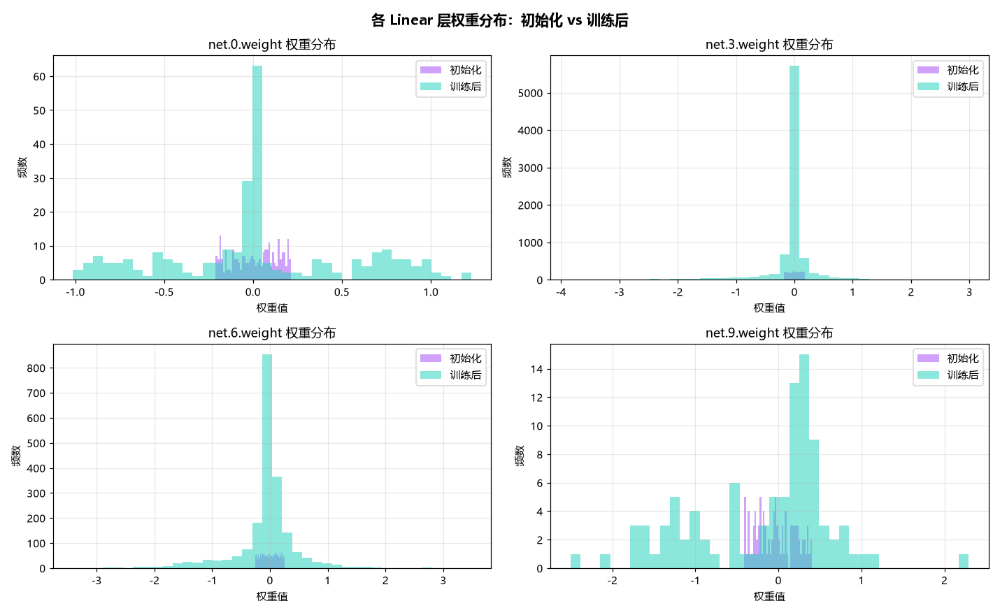

alt="人工智能概论 · 课程作业集（动态封面）">
alt="人工智能概论 · 课程作业集（动态封面）">
MLP 学习参数的实现和可视化
原版 (2-2-1 XOR) vs 新版 (深层 MLP) 对比 · 交互式训练过程与参数演化
说明：原版是手写的 2-2-1 单隐藏层 sigmoid 网络，只为演示 XOR；新版是可配置深层 MLP（Input(2) → Linear->ReLU(128) → Linear->ReLU(64) → Linear->ReLU(32) → Linear->—(3)），带优化器/学习率调度/正则化与可视化。两者解决的问题复杂度不同，对比旨在展示从"玩具网络"到"工程化训练流程"的演进。
一、动态训练实验室（可交互）
🚀 想自己动手？打开「实验室 2 · 实时神经网络训练台」
下面这段是 PyTorch 训练过程的「逐帧回放」。如果想真正改变数据、网络结构与超参数并现场训练，去实验室 2 的实时训练台：在画布上画样本、调整隐藏层和激活函数、调学习率，用纯 JavaScript 现场跑反向传播；决策边界热力图、逐层激活、神经元感受野、玩具网络赛跑与实验记录全部实时更新。
进入实验室 2 →这是一个可交互的训练时间轴：拖动滑块或点击播放，观察 权重参数如何被一步步更新。左侧是模型此刻的决策边界，右侧是四个 Linear 层的权重分布（紫色轮廓为初始化状态），下方数值与曲线游标同步跟随。橙色竖线标出 StepLR 的学习率衰减位置。
训练损失 loss—
训练准确率—
验证准确率—
学习率 lr—
决策边界
各层权重参数分布
训练曲线 · 紫=loss，青虚线=train_acc，橙色竖线=当前 epoch
观察要点：训练初期权重分布迅速偏离 Xavier 初始化、决策边界剧烈扭曲；随着 loss 下降，每轮参数更新幅度逐步收窄，学习率按 StepLR 减半后曲线出现明显台阶，边界趋于稳定但仍随梯度持续微调。"学会"不是一次性跳变，而是上万次小幅参数更新的累积。
二、架构与训练配置对比
| 维度 | 原版 (2-2-1 XOR) | 新版 (深层 MLP) |
|---|---|---|
| 输入→输出 | 2 → 1 | 2 → 3 |
| 隐藏层 | 1 层 (2 单元) | 3 层 (128, 64, 32) |
| 激活函数 | Sigmoid | relu |
| 正则化 | 无 | Dropout 0.1 |
| 参数量 | 9 | 10819 |
| 优化器 | Adam (lr=0.03, 无调度) | adam (lr=0.01, wd=1e-05) + step |
| 损失函数 | BCEWithLogits | CrossEntropy |
| 学习率调度 | 无 | step (step 1500, γ 0.5) |
| 批大小 | 全批量 (4) | 64 |
| 训练轮数 | 300 | 4000 |
| 数据集 | XOR 4 样本 | spiral 3类 |
| 任务结果 | XOR 全对: True (loss 0.0281) | val_acc 0.9444 / train_acc 0.9778 |
三、多维度可视化分析
训练对比（原版 vs 新版）

/>
/>
/>
/>MLP 网络结构与隐藏层表示

/>
/>训练过程动态：决策边界演化

/>参数学习过程量化

/>评估与参数分布

/>
/>